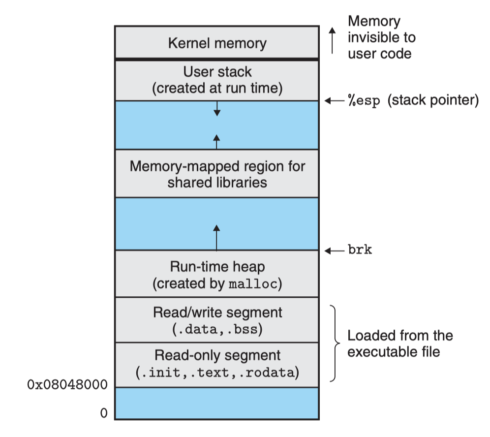
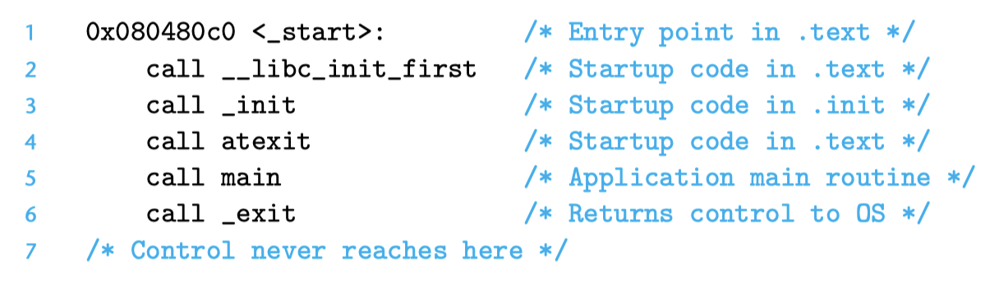
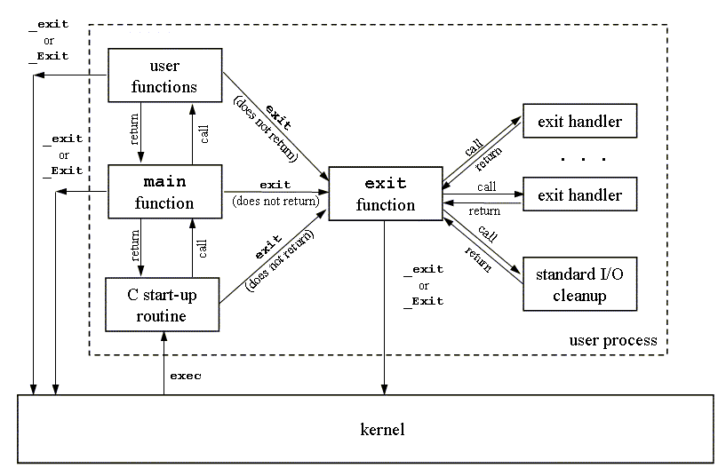

Program Loading
After our original source program is processed by the compilation toolchain, the source file (ASCII or UTF-8 encoded) has now been converted into an executable binary file. This binary file contains the necessary information required to load the program into memory for execution. Previously, we mentioned scenarios involving dynamic shared libraries, where the program loader needs to invoke the dynamic linker during loading to complete symbol resolution and relocation. Only then does the loader transfer control to the entry point of our binary program.
Let's take a detailed look below.
Executable Program
We have already learned how the static linking stage merges multiple object modules into a single executable object file. The following diagram shows a typical ELF executable file structure:

The ELF Header also includes the entry point of the executable program, which is the address of the first instruction to execute when the program runs. The .text, .rodata, and .data sections are similar to the corresponding sections in relocatable object files, except that these sections have already been relocated to their final runtime virtual memory addresses. The .init section defines a small function called _init, which is called by the program's initialization code. If the executable is fully linked, there is no need for .rel.data or .rel.text sections, but if dynamic shared library symbols are referenced, there should also be a .rel.dyn section for the dynamic linker to complete symbol resolution and relocation.
ELF executables are designed to be easily loaded into memory. The contiguous chunks of the executable file are mapped to contiguous memory segments. The program header table describes this mapping. The following diagram shows the program header table of an executable file, as output by objdump.

Explanation of some fields in the above output:
- offset: file offset;
- vaddr/paddr: virtual/physical address;
- align: segment alignment;
- filesz: segment size in the target file;
- memsz: segment size in memory;
- flags: permissions;
From the program header table, we see that the executable's program header table initializes two memory segments.
Rows 1 and 2 tell us about the first segment (code segment):
- align: aligned to a 4KB boundary;
- flags: read and execute permissions;
- vaddr+memsz: starts at memory address 0x08048000, occupying 0x448 bytes in memory;
- off+filesz: initialized with the first 0x448 bytes of the executable file;
This segment clearly stores code, usually containing data from the .text section.
Rows 3 and 4 tell us about the second segment (data segment):
- align: aligned to a 4KB boundary;
- flags: read and write permissions, no execute permission;
- vaddr+memsz: starts at memory address 0x08049448, total memory size 0x104 bytes;
- off+filesz: initialized with 0xe8 bytes from file offset 0x448;
In this example, the segment at offset 0x448 is exactly where .data starts. The remaining bytes in this segment correspond to .bss data, which will be initialized to zero at runtime.
Loader Principle
To run an executable file p, you can type its name in the Linux shell, such as:
$ /path-to/p
Since p is not a built-in shell command, the shell treats p as an executable file and runs it by invoking a piece of operating system code resident in memory called the loader. Any Linux program can invoke the loader by calling the execve family of functions. The loader copies the code and data from the executable file on disk into memory, then jumps to the program's first instruction or entry point to execute the program. This process of copying the program into memory and running it is called loading.
Each Linux program (process) has a runtime memory image, similar to the diagram below:
- On 32-bit Linux systems, the code segment always starts at 0x08048000;
- The data segment is at the next 4KB-aligned address;
- The runtime heap is at the first 4KB-aligned address after the read/write segments (.data, .bss), and grows from low to high addresses via the malloc library (actually the brk system call);
- The user stack always starts at the highest legal user address and grows from high to low addresses;
- Above the user stack is a segment reserved for OS kernel code and data, which user programs cannot access;
- Between the user stack and the runtime heap is space reserved for shared libraries;

When the loader runs, it creates the memory image as shown above. Guided by the ELF file header, the loader copies relevant contents of the executable into the code and data segments. Then, the loader jumps to the program's entry point.
For a C program, the startup code here is usually at the address of the symbol _start. The startup code at _start (startup code) is defined in the object file ctrl.o and is the same for all C programs. The diagram below shows the key function call sequence in the startup code.
After calling initialization routines from the .text and .init sections, the startup code calls the atexit routine, which attaches a series of functions to be called when the application terminates normally (the exit function runs the functions registered with atexit, then returns control to the OS via the _exit system call). Next, the startup code calls the application's main function, which begins executing our C code. After the application returns, the startup code calls the _exit routine, which returns control to the OS.

The above process can be simply summarized as follows:

How does the loader work in this process?
First, depending on whether dynamic linking is needed at load time, the loader's operation differs. Let's first give a general introduction.
Every program in a Unix system runs in a process context and has its own process address space. When the shell runs a program, the parent shell process creates a child shell process, which is a copy of the parent. The child process starts the loader by calling the execve system call.
The loader removes the existing memory segments from the child process and creates a new set of code, data, heap, and stack segments. The new heap and stack segments are initialized to zero. By mapping pages in the virtual address space to pages of the new executable, the new code and data segments are initialized with the contents of the new executable. Finally, the loader jumps to the _start address, which will eventually call the application's main function. Except for some header information, there is no data copied from disk to memory during loading until the CPU references a mapped virtual memory page, which triggers a page fault. At that point, the OS uses the page scheduling mechanism to automatically transfer the page from disk to memory, and the process continues execution.
The above is just a general introduction; the actual loading process involves more considerations.
Linking and Loading
Linking refers to the process where the linker resolves symbols, relocates, and combines multiple relocatable files (object files, library files) into an executable program.
Loading refers to the process where the loader loads the executable program, shared libraries, etc., from disk into memory, organizing the memory layout to prepare for program execution.
It is certain that the linker (especially the dynamic linker) and the loader are not completely isolated; they also cooperate with each other.
On Linux, linking can be static linking or dynamic linking, and loading can be static loading or dynamic loading. There are 2x2=4 possible combinations, each with its own characteristics and application scenarios.
- Static Linking and Static Loading:
Static linking means that all required library files (usually static libraries with the
.asuffix) are embedded directly into the executable at compile time. The linker/usr/bin/ldis responsible for linking these libraries into the final executable. Static loading means that at runtime, all code is already included in the executable, so no additional library files are needed. The loader is the kernel's ld-linux.so. - ~~Static Linking and Dynamic Loading:
~~On Linux, you can use functions like
dlopento dynamically load shared libraries (.so), but static libraries do not support this, so static libraries are not dynamically loaded in practice. - Dynamic Linking and Static Loading:
Dynamic linking means that references to dynamic libraries (
.sosuffix) are resolved and relocated at load time, rather than embedding the library code directly in the executable. The dynamic linker is the loader ld-linux.so. Static loading was mentioned earlier: the program is a complete executable and does not need additional library files; the loader is the kernel's ld-linux.so, which is also the actual dynamic linker. The loading and dynamic linking process can be subdivided into the initial loading phase, dynamic linking phase, and post-loading phase:- The initial loading phase maps the corresponding segments into the process's virtual address space via mmap,
- During dynamic linking, the addresses determined by symbol resolution and relocation are updated in the .got,
- The post-loading phase can use functions like dlopen for runtime loading, resolution, and relocation, which is the dynamic linking and dynamic loading method described next.
- Dynamic Linking and Dynamic Loading:
In dynamic linking and dynamic loading, the program can use the
libdllibrary and thedlopenfunction to dynamically load libraries at runtime. Linking and loading are distributed betweenlibdland the user program. For example, usedlopento dynamically load a library anddlsymto resolve dynamically linked symbols.
ps: Dynamic linking and dynamic loading provide greater flexibility, allowing programs to load and use libraries as needed.
Summary
This article introduced the execution details when a program is loaded and run. Considering the various ways of linking (static linking, dynamic linking) and loading (static loading, dynamic loading), we described these combinations and their application scenarios. We also specifically described the different stages when using dynamic shared libraries: the loader loading the program, completing dynamic linking, and possibly subsequent dynamic library loading and symbol resolution.
Now we have covered the details from source code to compilation, linking, and loading/execution. Next, in section 6, we will quickly review the use of the relevant Go standard library go/src/debug, which includes support code for ELF, symbol tables, and DWARF. In section 7, we will briefly summarize the implementation of go/src/debug/dwarf in the Go standard library. This is still not enough; in Chapter 8, we will delve into how DWARF describes high-level language constructs, such as how to describe a function or a type.
OK, we are one step closer to our goal. Let's keep going.
References
- Computer System: A Programmer's Perspective, Randal E.Bryant, David R. O'Hallaron, p450-p479
- Understanding Computer Systems, translated by Gong Yili and Lei Yingchun, p450-p479
- What are the executable ELF files respectively for static linker, dynamic linker, loader and dynamic loader, Roel Van de Paar, https://www.youtube.com/watch?v=yzI-78zy4HQ
- Advanced Programming in Unix Environment